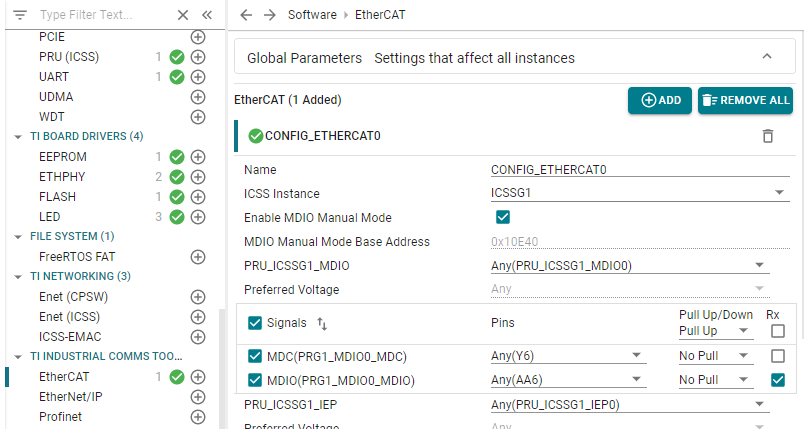
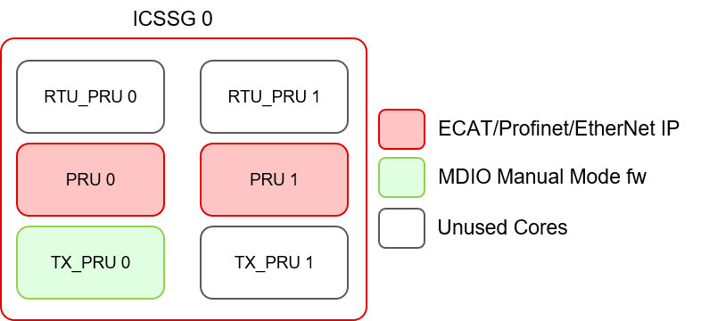

Hardware Issue
If your silicon is affected with errata i2329— MDIO interface corruption, then TI suggests to use MDIO Manual mode as software workaround mentioned below.
Working of PRU-ICSS Firmware for MDIO Manual Mode
- Firmware Flow
- The firmware, by configuring the MDIO Control Register, enables the MDIO state machine once for some period (less than 1us) and then disables it.
- Then it configures the MDIO hardware in 'MDIO_MODE_MANUAL' and keeps the MDIO internal state machine disabled.
- Now the firmware uses the new defined register space to emulate the actual MDIO register space.
- It configures the MDIO hardware by copying over the register values from this defined register space to the actual MDIO addresses.
- The firmware runs in a loop, and checks if there are any PHY access requests by reading the
GO bit of the user-access registers.
- If there is some PHY access request, then it performs the operation and clears the
GO bit of the user-access register.
- The firmware manually drives the MDIO_DATA and MDIO_CLK pins using MANUAL_IF_REG registers of MDIO to execute the PHY operations (in clause22 mode only). The MDIO_CLK frequency is fixed around 2.5MHz.
- Other cores can use the user-access registers to perform PHY accesses, because both MDIO_USER_ACCESS_REG_0 and MDIO_USER_ACCESS_REG_1 are implemented.
- The register address has to be passed to the firmware by setting the R12 register of PRU to the desired location for emulating the MDIO register space.
- For example, if we set R12 to 0x00010000 (ICSSG shared memory offset) for ICSSG1 instance, the MDIO registers will start from 0x30090000 and so the user access registers' offsets will be (0x30090000+0x80) for USER_ACCESS_0_REG and (0x30090000+0x88) for USER_ACCESS_1_REG.
- Note
- Each protocol will have different base register offset depending on the availability of free memory region.
Example Usage
This section describes how to use the manual-mode firmware to make PHY register accesses.
Sysconfig
Enable the manual mode option from SysConfig from the protocol specific module. Enabling this updates the MDIO base address which will be used by the ETHPHY driver.

Load PRU firmware
Order to follow for loading MDIO Manual MDIO firmware:
- Make sure any MDIO access is made only after the firmware has been loaded.
- Clear the register space which will be used by firmware for MDIO register space emulation.
- Load the PRU firmware and set the R12 register to the emulated MDIO base register offset.
- Enable the PRU core and then we can create MDIO User Access Register requests.
Check the function tiesc_mdioManualModeSetup() in tiescsoc.c at location ${SDK_INSTALL_PATH}/examples/industrial_comms/ethercat_slave_beckhoff_ssc_demo/am64x-evm/tiescsoc.c for understanding how to load and run the PRU firmware.
The PRU firmware can be built using the example present at ${SDK_INSTALL_PATH}/examples/pru_io/mdio_fw.

By default the MDIO manual mode firmware is loaded on TX_PRU core, but we can load the same firmare on other unused RTU_PRU or TX_PRU cores if needed.
Using User Access Registers
Creating PHY access requests from the R5F core remains same as all the configuration settings (for changing the MDIO base address) are modified by SysConfig. There is no change in the MDIO driver APIs, only the base address has to change for the API calls.
Impact
- One PRU is now reserved for emulating MDIO Manual Mode functionality.
- For MDIO API Usage, the base address is now changed. MDIO_initClock API call is not needed.
- Following Registers are not available when using MDIO manual mode firmware (from the emulated register space):
- MDIO_VERSION_REG (MDIO Version Register)
- MDIO_CONTROL_REG (MDIO Control Register)
- MDIO_ALIVE_REG (MDIO Alive Register)
- MDIO_LINK_INT_RAW_REG (MDIO Link Interrupt Raw Register)
- MDIO_LINK_INT_MASKED_REG (MDIO Link Interrupt Masked Register)
- MDIO_LINK_INT_MASK_SET_REG (MDIO Link Interrupt Mask Set Register)
- MDIO_LINK_INT_MASK_CLEAR_REG (MDIO Link Interrupt Mask Clear Register)
- MDIO_USER_INT_RAW_REG (MDIO User Interrupt Raw Register)
- MDIO_USER_INT_MASKED_REG (MDIO User Interrupt Masked Register)
- MDIO_USER_INT_MASK_SET_REG (MDIO User Interrupt Mask Set Register)
- MDIO_USER_INT_MASK_CLEAR_REG (MDIO User Interrupt Mask Clear Register)
- MDIO_MANUAL_IF_REG (MDIO Manual Interface Register)
- MDIO_POLL_REG (MDIO Poll Inter Register)
- MDIO_POLL_EN_REG (MDIO Poll Enable Register)
- MDIO_CLAUS45_REG (Clause 45 Register)
- MDIO_USER_ADDR0_REG (MDIO User Address 0 Register)
- MDIO_USER_ADDR1_REG (MDIO User Address 1 Register)
- Only following registers are available when using MDIO manual mode firmware (from the emulated register space):
- MDIO_LINK_REG (MDIO Link Register)
- MDIO_USER_ACCESS_REG_0 (MDIO User Access 0 Register)
- MDIO_USER_PHY_SEL_REG_0 (MDIO User PHY Select 0 Register)
- MDIO_USER_ACCESS_REG_1 (MDIO User Access 1 Register)
- MDIO_USER_PHY_SEL_REG_1 (MDIO User PHY Select 1 Register)
Constraints and Limitations
- MLINK pin is necessary for MDIO_LINK_REG updates. We need MLINK feature of MDIO to do automatic polling of link status via the MIIx_RXLINK input pin to PRU-ICSS which must be connected to a status output from the external PHY which does not toggle while the link is active.
- The firmware does not support polling based MDIO Link Register update.
- Only Clause 22 frame format is supported. Clause 45 frame format is not supported.
- MDIO state machine is disabled and hence MDIO LINK_INT and USER_INT interrupts are NOT available.
Important files and directory structure
| Folder/Files | Description |
| ${SDK_INSTALL_PATH}/examples/pru_io/ |
| mdio_fw/ | Contains the project files needed for MDIO manual mode firmware |
| ${SDK_INSTALL_PATH}/source/pru_io/ |
| firmware/common/mdio_macros.inc | Contains the source file needed for MDIO manual mode firmware |


 1.8.20
1.8.20